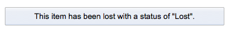
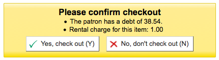
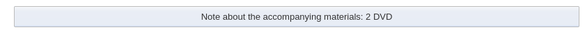
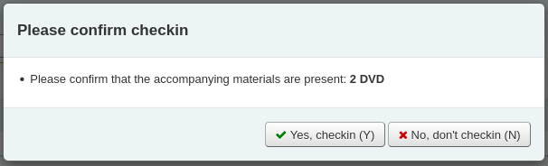
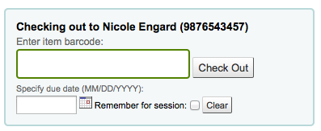
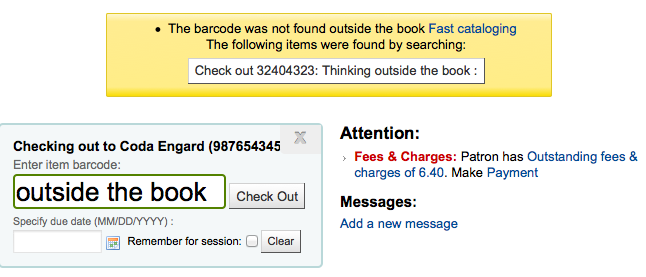

Circulation
Get there: More > Administration > Global System Preferences > Circulation
Article Requests
ArticleRequests
Default: Don’t enable
Asks: ___ patrons to place article requests.
Values:
Enable
Don’t enable
Description:
This preference controls whether or not article requests are allowed to be placed by patrons in the OPAC.
ArticleRequestsLinkControl
Default: Use algorithm to show or hide
Asks: ___ article request link on search results.
Values:
Always show
Use algorithm to show or hide
Description:
On the OPAC results page, either always show the ‘Request article’ link or check the branch, patron and item type combination to determine whether or not an article can be requested from this particular record before displaying the link.
ArticleRequestsMandatoryFields
Default: None selected
Asks: For records that are record level or item level requestable, make the following fields mandatory ___
Values:
[Select all]
Author
Chapters
Date
Issue
Pages
Title
Volume
Description:
This preference controls what fields must be filled in before an article request can be placed for either a record level or item level request. Choosing [Select all] indicates that all fields listed (Author, Chapters, Date, Issue, Pages, Title, Volume) must be completed before the article request can be placed.
ArticleRequestsMandatoryFieldsItemsOnly
Default: None selected
Asks: For records that are only item level requestable, make the following fields mandatory ___
Values:
[Select all]
Author
Chapters
Date
Issue
Pages
Title
Volume
Description:
This preference controls what fields must be filled in before an article request can be placed for an item level request only. Choosing [Select all] indicates that all fields listed (Author, Chapters, Date, Issue, Pages, Title, Volume) must be completed before the article request can be placed.
ArticleRequestsMandatoryFieldsRecordOnly
Default: None selected
Asks: For records that are only record level requestable, make the following fields mandatory ___
Values:
[Select all]
Author
Chapters
Date
Issue
Pages
Title
Volume
Description:
This preference controls what fields must be filled in before an article request can be placed for a record level request only. Choosing [Select all] indicates that all fields listed (Author, Chapters, Date, Issue, Pages, Title, Volume) must be completed before the article request can be placed.
Batch Checkout
BatchCheckouts
Default: Don’t allow
Asks: ___ batch checkouts
Values:
Allow
Don’t allow
BatchCheckoutsValidCategories
Asks: Patron categories allowed to checkout in a batch ___ (list of patron categories separated with a pipe ^|^)
Checkin policy
BlockReturnOfLostItems
Asks: ___ returning of items that have been lost.
Default: Don’t block
Values:
Block
Don’t block
Description:
This preference controls whether and item with a lost status (952$1 in MARC21) can be checked in or not.
BlockReturnOfWithdrawnItems
Asks: ___ returning of items that have been withdrawn.
Default: Block
Values:
Block
Don’t block
Description:
This preference controls whether and item with a withdrawn status (952$0 in MARC21) can be checked in or not.
CalculateFinesOnBackdate
Asks: ___ calculate and update overdue charges when an item is returned with a backdated return date.
Default: Do
Values:
Do
Don’t
Description:
This system preference is similar to CalculateFinesOnReturn but is used when checkins are backdated either through the book drop mode or the specified return date (see SpecifyReturnDate).
CalculateFinesOnReturn
Asks: ___ calculate and update overdue charges when an item is returned.
Default: Do
Values:
Do
Don’t
Description:
If this preference is set to “Do” and the fines cron job is off then Koha will calculate fines only when items are returned. If you have the fines cron job on and this preference set to “Do” then this preference will calculate fines based on the cron (usually run nightly) and then again when you check the item in. This option is best for those who are doing hourly loans. If this preference is set to “Don’t” then fines will only be accrued if the fines cron job is running.
Important
If you are doing hourly loans then you should have this set to ‘Do’.
Important
The finesMode system preference must be set to ‘Calculate and charge’ in order for this system preference to have any effect.
CumulativeRestrictionPeriods
Asks: ___ the restriction periods.
Default: Don’t cumulate
Values:
Don’t cumulate
Cumulate
Description:
This system preference controls whether or not restriction periods should be served concurrently or consecutively.
If set to ‘Don’t cumulate’, the patron will be restricted only for the longest period. (For example, if a patron has a restriction of 10 days and another restriction of 15 days, they will be restricted for 15 days.)
If set to ‘Cumulate’, the patron will be restricted for the sum of all the restriction period. (For example, if a patron has a restriction of 10 days and another restriction of 15 days, they will be restricted for 25 days.)
HidePersonalPatronDetailOnCirculation
Asks: ___ hide patrons phone number, email address, street address and city in the circulation page
Default: Don’t
Values:
Don’t
Do
Description:
This preference controls the display of the patron’s phone number, email address, and physical address from the left side of the screen (under their picture, if they have one).
Set to ‘Do’ these informations will only be visible on the patron’s detail page.
HoldsAutoFill
Asks: ___ automatically fill holds instead of asking the librarian.
Default: Don’t
Values:
Do
Don’t
Description:
If set to ‘Do’, the holds confirmation pop-up will not appear upon checking in a reserved item.
HoldsAutoFillPrintSlip
Asks: ___ automatically display the holds slip dialog for auto-filled holds.
Default: Don’t
Values:
Do
Don’t
Description:
If set to ‘Do’, the holds slip print pop-up will appear automatically upon checking in a reserved item.
HoldsAutoFill must be set to ‘do’ for this preference to have any effect.
HoldsNeedProcessingSIP
Asks: ___ holds automatically if matching item is returned via SIP protocol.
Default: Fulfill
Values:
Fulfill
Don’t fulfill
Description:
This system preference controls whether or not holds are automatically filled by items returned via SIP (sorter, auto check-in stations, etc.)
SkipHoldTrapOnNotForLoanValue
Asks: Never trap items with ‘not for loan’ values of ___ to fill holds.
Description:
This system preference is used to completely exclude items with ‘not for loan’ values from filling holds.
Enter NOT_LOAN authorized values separated by pipes (|).
StoreLastBorrower
Asks: ___ the last patron to return an item.
Default: Don’t store
Values:
Don’t store
Store
Description:
This preference allows you to store the last patron to borrow an item even if the patron has chosen to have their reading history anonymized.
Note
This setting is independent of opacreadinghistory and/or AnonymousPatron.
TransfersBlockCirc
Asks: ___ staff from continuing to checkin items when a transfer is triggered.
Default: Block
Values:
Don’t block
Block
Description:
This system preference controls whether or not the transfer pop-up blocks further checkins.
TrapHoldsOnOrder
Asks: ___ items that are not for loan but holdable (notforlan < 0) to fill holds.
Default: Trap
Values:
Don’t trap
Trap
Description:
This system preference controls whether or not items that have a NOT_LOAN authorized value smaller than 0 (which means that the item can be put on hold, but not checked out), should be used to fill holds.
UpdateItemLocationOnCheckin
Asks: This is a list of value pairs. The first value is followed immediately by colon, space, then the second value.
Description:
This system preference affects the item’s current and permanent locations when the item is checked in (whether it was checked out or not).
If the location value on the left of the colon (:) matches the item’s current location, it will be updated to match the location value on the right of the colon (:).
The values are the LOC authorised values.
For example, ‘STAFF: GEN’ will move an item from the staff office to the general collection when the item is checked in.
Special terms
PROC: Processing center. When using PROC, only the current location will be affected.
CART: Shelving cart. When using CART, only the current location will be affected.
_PERM_: This will use the item’s permanent location, whatever that location is.
- _BLANK_: Used on the left as a first value, it will add a location if
there is none. Used on the right as a second value, it will remove the location.
_ALL_: Used on the left as a first value, it will affect all items and override all other rules.
警告
Requires YAML syntax to work
This means
Make sure there is NO space between the first value and the colon
Make sure there IS a space between the colon and the second value
Make sure each pair is on its own line
If using PROC or CART, use the cart_to_shelf cron job to return the items to their permanent location after a determined number of hours.
UpdateNotForLoanStatusOnCheckin
Asks: This is a list of value pairs. When an item is checked in, if the not for loan value on the left matches the items not for loan value it will be updated to the right-hand value.
Description:
This system preference affects the item’s ‘not for loan’ status when the item is checked in (whether it was checked out or not).
If the status value on the left of the colon (:) matches the item’s current status, it will be updated to match the status value on the right of the colon (:).
The values are the NOT_LOAN authorised values.
For example, ‘-1: 0’ will cause an item that was set to ‘Ordered’ to now be available for loan
警告
Requires YAML syntax to work
This means
Make sure there is NO space between the first value and the colon
Make sure there IS a space between the colon and the second value
Make sure each pair is on its own line
Checkout Policy
AgeRestrictionMarker
Asks: Restrict patrons with the following target audience values from checking out inappropriate materials: ___
Description:
This preference defines certain keywords that will trigger Koha to restrict checkout based on age. These restrictions can be overridden by the AgeRestrictionOverride preference. Enter in this field a series of keywords separated by bar (|) with no spaces. For example PG|R|E|EC|Age| will look for PG followed by an age number, R folllowed by an age number, Age followed by an age number, and so on. These values can appear in any MARC field, but Library of Congress recommends the 521$a (Target Audience Note). Whatever field you decide to use you must map the word agerestriction in the biblioitems table to that field in the Koha to MARC Mapping. When cataloging you can enter values like PG 13 or E 10 in the 521$a and Koha will then notify circulation librarians that the material may not be recommended for the patron based on their age.
Important
You must map the word agerestriction in the biblioitems table to the MARC field where this information will appear via the Koha to MARC Mapping administration area.
AgeRestrictionOverride
Default: Don’t allow
Asks: ___ staff to check out an item with age restriction.
Values:
Allow

Don’t allow

Description:
When the AgeRestrictionMarker preference is set, Koha will try to warn circulation librarians before checking out an item that might have an age restriction listed in the MARC record. This preference asks if you would like the staff to be able to still check out these items to patrons under the age limit.
AllFinesNeedOverride
Default: Require
Asks: ___ staff to manually override all fines, even fines less than noissuescharge.
Values:
Don’t require
Require
Description:
This preference let’s you decide if you want to always be warned that the patron has fines when checking out. If you have it set to ‘Require’ then no matter how much money the patron owes a message will pop up warning you that the patron owes money.
AllowFineOverride
Default: Don’t allow
Asks: ___ staff to manually override and check out items to patrons who have more than noissuescharge in fines.
Values:
Allow
Don’t allow
Description:
This preference lets you decide if you staff can check out to patrons who owe more money than you usually let them carry on their account. If set to ‘Allow’ staff will be warned that the patrons owes money, but it won’t stop the staff from checking out to the patron.
AllowItemsOnHoldCheckoutSCO
Default: Don’t allow
Asks: ___ checkouts of items reserved to someone else in the SCO module. If allowed do not generate RESERVE_WAITING and RESERVED warning. This allows self checkouts for those items.
Values:
Allow
Don’t allow
Important
This system preference relates only to Koha’s web based self checkout.
Description:
When this preference is set to ‘Allow’ patrons will be able to use Koha’s web based self checkout to check out a book to themselves even if it’s on hold for someone else. If you would like Koha to prevent people from checking out books that are on hold for someone else set this preference to “Don’t allow”.
AllowItemsOnHoldCheckoutSIP
Asks: ___ checkouts of items reserved to someone else via SIP checkout messages.
Default: Don’t allow
Values:
Allow
Don’t allow
Important
This system preference relates only to SIP-based self-checkout, not Koha’s web based self checkout.
Description:
When this preference is set to ‘Allow’ patrons will be able to use your external self check machine to check out a book to themselves even if it’s on hold for someone else.
If you would like Koha to prevent people from checking out books that are on hold for someone else set this preference to ‘Don’t allow’.
AllowMultipleIssuesOnABiblio
Default: Allow
Asks: ___ patrons to check out multiple items from the same record.
Values:
Allow
Don’t allow
Description:
If this preference is set to ‘Allow’ then patrons will be able to check out multiple copies of the same title at the same time. If it’s set to “Don’t allow” then patrons will only be allowed to check out one item attached to a record at a time. Regardless of the option chosen in this preference records with subscriptions attached will allow multiple check outs.
Important
This will only effect records without a subscription attached.
AllowNotForLoanOverride
Default: Allow
Asks: ___ staff to override and check out items that are marked as not for loan.
Values:
Allow
Don’t allow
Description:
This parameter is a binary setting which controls the ability of staff (patrons will always be prevented from checking these items out) to check out items that are marked as “not for loan”. Setting it to “Allow” would allow such items to be checked out, setting it to “Don’t allow” would prevent this. This setting determines whether items meant to stay in the library, such as reference materials, and other library resources can be checked out by patrons.
AllowRenewalLimitOverride
Default: Allow
Asks: ___ staff to manually override the renewal limit and renew a checkout when it would go over the renewal limit.
Values:
Allow
Don’t allow
Description:
This preference is a binary setting which controls the ability of staff to override the limits placed on the number of times an item can be renewed. Setting it to “Allow” would allow such limits to be overridden, setting it to “Don’t allow” would prevent this. This is a preference in which if it is set to “allow” it would allow the library staff to use their judgment for overriding the renew limit for special cases, setting it to “Don’t allow” prevents an opportunity for abuse by the library staff.
AllowRenewalOnHoldOverride
Asks: ___ staff to renew items that are on hold by manually specifying a due date.
Default: Don’t allow
Values:
Allow
Don’t allow
Description:
This preference enables items that are on hold to be renewed with a due date specified by the user.
It can appear in two locations:
In the “Checkouts” table on the Patron Details screen. It is possible to select on loan items that would otherwise fulfil a hold request to be renewed. When such an item is selected, an additional date selection box is displayed to allow the user to specify the due date for all on hold items that are to be renewed.
In the Circulation > Renew alert screen. When a barcode of an on loan item that would ordinarily fulfil a hold request is entered, the usual alert is displayed indicating that the item is on hold, it is still possible to override this, and renew. With this preference enabled it is also possible to specify a due date.
AllowReturnToBranch
Default: to any library
Asks: Allow materials to be returned to ___
Values:
either the library the item is from or the library it was checked out from.
only the library the item is from.
only the library the item was checked out from.
to any library.
Description:
This preference lets the library system decide how they will accept returns. Some systems allow for items to be returned to any library in the system (the default value of this preference) others want to limit item returns to only specific branches. This preference will allow you to limit item returns (checkins) to the branch(es) set in the value.
AllowTooManyOverride
Default: Allow
Asks: ___ staff to override and check out items when the patron has reached the maximum number of allowed checkouts.
Values:
Allow
Don’t allow

Description:
If this preference is set to “Allow” then staff all will be presented with an option to checkout more items to a patron than are normally allowed in the Circulation and fines rules. If this preference is set to “Don’t allow” then no staff member will be able to check out more than the circulation limit.
AutomaticItemReturn
Default: Do
Asks: ___ automatically transfer items to their home branch when they are returned.
Values:
Do
Don’t
Description:
This preference is a binary setting which determines whether an item is returned to its home branch automatically or not. If set to “Don’t”, the staff member checking an item in at a location other than the item’s home branch will be asked whether the item will remain at the non-home branch (in which case the new location will be marked as a holding location) or returned. Setting it to “Do” will ensure that items checked in at a branch other than their home branch will be sent to that home branch.
AutoRemoveOverduesRestrictions
Default: Do not
Asks: ___ allow OVERDUES restrictions triggered by sent notices to be cleared automatically when all overdue items are returned by a patron.
Values:
Do
Do not
Description:
Using the Overdue notice/status triggers you can restrict patrons after they receive an overdue notice. This preference lets you define whether Koha will automatically remove that restriction once the overdue items in question are returned or not.
AutoReturnCheckedOutItems
Asks: ___ require librarians to manually confirm a checkout where the item is already checked out to another patron.
Values:
Do
Don’t
Default: Do
Description:
This preference controls whether Koha asks for a confirmation when trying to check out an item that is already checked out to another patron.
Set to ‘Do’, Koha will ask the staff member to confirm the check out.

Set to ‘Don’t’, Koha will simply return the item from the previous patron’s file and check it out to the actual patron and show a message.
CircControl
Default: the library the item is from
Asks: Use the checkout and fines rules of ___
Values:
the library the item is from
The circulation and fines policies will be determined by the item’s library where HomeOrHoldingBranch chooses if item’s home library is used or holding library is used.
the library the patron is from
The circulation and fines policies will be determined the patron’s home library
the library you are logged in at
The circulation and fines policies will be determined by the library that checked the item out to the patron
ConsiderOnSiteCheckoutsAsNormalCheckouts
Asks: ___ on-site checkouts as normal checkouts. If enabled, on-site checkouts will count toward the checkout limit for regular checkouts. The on-site limit will still apply for on-site checkouts. If disabled, both values will be checked separately.
Default: Consider
Values:
Consider
Don’t consider
Description:
This preference allows you to decide if checkouts that are considered on-site checkouts are counted toward the total checkouts a patron can have. You can also set your circulation and fines rules to allow only a certain number of normal and on-site checkouts.
DefaultLongOverdueChargeValue
Asks: Charge a lost item to the borrower’s account when the LOST value of the item changes to ___
Description:
Leave this field empty if you don’t want to charge the user for lost items. If you want the user to be charged enter the LOST authorized value you are using in the DefaultLongOverdueLostValue preference. This preference is used when the longoverdue cron job is called without the –charge parameter.
DefaultLongOverdueLostValue and DefaultLongOverdueDays
Asks: By default, set the LOST value of an item to ___ when the item has been overdue for more than ___ days.
Description:
These preferences are used when the longoverdue cron job is called without the –lost parameter. It allows users to set the values of the longoverdue cron without having to edit the crontab. Setting the values to 1 and 30 for example will mark the item with the LOST authorized value of 1 after the item is 30 days overdue.
HoldsInNoissuesCharge
Default: Don’t include
Asks: ___ hold charges when summing up charges for noissuescharge.
Values:
Don’t include
Include
HomeOrHoldingBranch
Default: the item’s home library (homebranch).
Asks: Use the checkout and fines rules of ___
Values:
the item’s home library (homebranch).
the item’s holding library (holdingbranch).
Description:
This preference does several things.
If CircControl is set to ‘the library the item is from’ then the circulation and fines policies will be determined by the item’s library where HomeOrHoldingBranch chooses if item’s home library is used or holding library is used.
If IndependentBranches is set to ‘Prevent’ then the value of this preference is used in figuring out if the item can be checked out. If the item’s home library does not match the logged in library, the item cannot be checked out unless you are a superlibrarian.
Important
It is not recommend that this setting be changed after initial setup of Koha because it will change the behavior of items already checked out.
IssueLostItem
Default: display a message
Asks: When issuing an item that has been marked as lost, ___.
Values:
display a message

do nothing
This option will just check the item out without notifying you that the item was marked lost.
require confirmation
Description:
This preference lets you define how library staff are notified that an item with a lost status is being checked out. This will help staff mark items as ‘available’ if you choose to ‘display a message’ or ‘require confirmation.^ If you choose to ‘do nothing,^ there will be no notification that the item being checked out is marked as ‘lost.^
IssuingInProcess
Default: Don’t prevent
Asks: ___ patrons from checking out an item whose rental charge would take them over the limit.
Values:
Don’t prevent
Prevent
Description:
This preference determines if a patron can check items out if there is an overdue fine on the account and any of the materials the patron wishes to check out will potentially tip the account balance over the maximum fines policy the library has in place.
Example: Your library has a $5 limit set for ‘fines’ (ie, after incurring $5 in fines, a patron can no longer check out items). A patron comes to the desk with 5 items to check out (4 books and a video) The patron has $4 in charges already on their account. One of the videos has a rental charge of $1, therefore making the total fines on the patron’s account suddenly $5 (the limit).
ItemsDeniedRenewal
Asks: Define custom rules to deny specific items from renewal.
Description:
This preference allows you to specify items that should not be renewed either from the OPAC or staff client. You can enter any combination of fields (from the items table in the Koha database) followed by a colon then a space then a bracketed list of values separated by commas. e.g:
ccode: [NEWFIC,NULL,DVD] itype: [NEWBK,""]
The word ‘NULL’ can be used to block renewal on undefined fields, while an empty string “” will block on an empty (but defined) field.
Note
If using automatic renewal notices your notice text should be updated to account for the new reason that renewals may be denied “item_denied_renewal”.
ManInvInNoissuesCharge
Default: Include
Asks: ___ custom debit types when summing up charges for noissuescharge.
Values:
Don’t include
Include
Description:
This preference lets you decide if charges entered as manual invoices are included when calculating the noissuescharge. If this is set to ‘Include’ then Koha will include all manual invoices when deciding if the patron owes too much money to check anything else out of the library. If it’s set to ‘Don’t include’ then Koha will ignore all manual invoice charges when figuring out if the patron owes too much money to checkout additional materials.
MarkLostItemsAsReturned
Asks: ___ items as returned when flagged as lost.
Default: Disable
Values:
[Select All]
From the ‘holds to pull’ list
From the batch item modification tool
From the items tab of the catalog module
From the longoverdue cronjob
When cataloging an item
When marking an item as a return claim
When receiving a payment for the items
Description:
The library can choose which of these actions or all of these actions, does an item gets automatically returned from the patron’s account or not.
maxoutstanding
Default: 5
Asks: Prevent patrons from making holds on the OPAC if they owe more than ___ USD in fines.
noissuescharge
Default: 5
Asks: Prevent patrons from checking out books if they have more than ___ USD in fines.
Description:
This preference is the maximum amount of money owed to the library before the user is banned from borrowing more items. Using the ManInvInNoissuesCharge and RentalsInNoissuesCharge preferences you can control which types of charges are considered in this total. This also coincides with maxoutstanding that limits patrons from placing holds when the maximum amount is owed to the library.
NoIssuesChargeGuarantees
Asks: Prevent a patron from checking out if the patron has guarantees owing in total more than ___ USD in fines.
Description:
Allows a library to prevent patrons from checking out items if his or her guarantees owe too much in fines.
NoIssuesChargeGuarantorsWithGuarantees
Asks: Prevent a patron from checking out if the patron has guarantors and those guarantor’s guarantees owing in total more than ___ (currency) in fines.
Description:
Allows a library to prevent patrons from checking out items if their guarantees or their guarantees’ other guarantors owe too much in fines.
This effectively blocks the entire family.
NoRenewalBeforePrecision
Default: date
Asks: Calculate “No renewal before” based on ___.
Values:
date
exact time
Note
Only relevant for loans calculated in days, hourly loans are not affected.
Description:
This preference allows you to control how the ‘No renewal before” option in the Circulation and fines rules administration area.
NoticeBcc
Asks: Send all notices as a BCC to this email address ___
This preference makes it so that a librarian can get a copy of every notice sent out to patrons.
Note
If you’d like more than one person to receive the blind copy you can simply enter in multiple email addresses separated by commas.
OnSiteCheckoutAutoCheck
Default: Don’t enable
Asks: ___ onsite checkout by default if last checkout was an onsite one.
Values:
Don’t enable
Enable
Description:
This preference allows you specify that if a preceding checkout was an onsite checkout, then the ‘On-site checkout’ checkbox will be ticked ready for the next checkout.
OnSiteCheckouts
Default: Disable
Asks: ___ the on-site checkouts feature.
Values:
Disable
Enable

Description:
This preference lets you check out items that are ‘not for loan’ to patrons. A checkbox is added to the checkout screen when this preference is set to ‘Enable’ labeled ‘On-site checkout’. This allows you to track who’s using items that are normally not for loan or are in a closed stack setting.
OnSiteCheckoutsForce
Default: Disable
Asks: ___ the on-site for all cases (Even if a user is debarred, etc.).
Values:
Disable
Enable

Description:
This preference lets the staff override any restrictions a patron might have and check out items for use within the library. The OnSiteCheckouts preference must first be set to ‘Enable’ for this preference to be considered.
OPACFineNoRenewalsBlockAutoRenew
Default: Allow
Asks: If a patron owes more than the value of OPACFineNoRenewals, ___ his/her auto renewals.
Values:
Allow
Block
OverdueNoticeCalendar
Asks: ___ when working out the period for overdue notices
Default: Ignore calendar
Values:
Ignore calendar
Notices do not take holidays into account, so they will be sent even if holidays have meant the item is not actually overdue yet
Use calendar
Notices take holidays into account, so they will not be sent if holidays mean the item is not actually overdue yet
OverduesBlockCirc
Default: Ask for confirmation
Asks: ___ when checking out to a borrower that has overdues outstanding
Values:
Ask for confirmation
Will not let you check an item out to patrons with overdues until a librarian confirms that it is okay
Block
Block all patrons with overdue items from being able to check out
Don’t block
Allow all patrons with overdue items to continue to check out
OverduesBlockRenewing
Default: allow renewing
Asks: When a patron’s checked out item is overdue, ___
Values:
allow renewing
block renewing for all the patron’s items
block renewing for only this item
PrintNoticesMaxLines
Asks: Include up to ___ item lines in a printed overdue notice.
Note
If the number of items is greater than this number, the notice will end with a warning asking the borrower to check their online account for a full list of overdue items.
Note
Set to 0 to include all overdue items in the notice, no matter how many there are.
Important
This preference only refers to the print notices, not those sent via email.
RenewAccruingItemInOpac
Asks: If a patron pays off all fines on an overdue item that is accruing fines in the OPAC via a payment plugin, ___ the item automatically.
Default: Don’t renew
Values:
Don’t renew
Renew
Description:
This system preference allows you to control whether or not overdue items are renewed if the patron pays the fine online.
Note
If the RenewalPeriodBase system preference is set to ‘due date’, renewed items may still be overdue even after renewal.
RenewAccruingItemWhenPaid
Asks: If a patron pays off all fines on an overdue item that is accruing fines ___ the item automatically.
Default: Don’t renew
Values:
Don’t renew
Renew
Description:
This system preference allows you to control whether or not overdue items are renewed if the fine is paid in the staff interface.
Note
If the RenewalPeriodBase system preference is set to ‘due date’, renewed items may still be overdue even after renewal.
RenewalPeriodBase
Default: the old due date of the checkout
Asks: When renewing checkouts, base the new due date on ___
Values:
the old due date of the checkout
the current date
RenewalSendNotice
Default: Don’t send
Asks: ____ a renewal notice according to patron checkout alert preferences.
Values:
Don’t send
Send
Description:
If a patron has chosen to receive a check out notice in their messaging preferences and this preference is set to ‘Send’ then those patrons will also receive a notice when they renew materials. You will want to set up a new notice with the code of RENEWAL (if you don’t already have it) with custom text for renewing items.
Important
This preference requires that you have EnhancedMessagingPreferences set to ‘Allow’
RentalFeesCheckoutConfirmation
Default: do not ask
Asks: When checking out an item with rental fees, ___ for confirmation.
Values:
ask

do not ask
Description:
If you are charging rental fees for items this preference will make it so that you can show (or not show) a confirmation before checking out an item that will incur a rental charge.
RentalsInNoissuesCharge
Default: Include
Asks: ___ rental charges when summing up charges for noissuescharge.
Values:
Don’t include
Include
Description:
This preference lets you decide if rental charges are included when calculating the noissuescharge. If this is set to include then Koha will include all rental charges when deciding if the patron owes too much money to check anything else out of the library. If it’s set to Don’t include then Koha will ignore all rental charges when figuring out if the patron owes too much money to checkout additional materials.
RestrictionBlockRenewing
Default: Allow
Asks: If patron is restricted, ___ renewing of items from the staff interface and via the misc/cronjobs/automatic_renewals.pl cronjob.
Values:
Allow
Block
Description:
This preference affects all forms of renewals made from the staff interface and the automatic renewals cron job.
ReturnBeforeExpiry
Default: Don’t require
Asks: ___ patrons to return books before their accounts expire (by restricting due dates to before the patron’s expiration date).
Values:
Don’t require
Require
Description:
This is preference may prevent a patron from having items checked out after their library card has expired. If this is set to “Require”, then a due date of any checked out item can not be set for a date which falls after the patron’s card expiration. If the setting is left “Don’t require” then item check out dates may exceed the expiration date for the patron’s library card.
StaffSearchResultsDisplayBranch
Default: the library the item is held by
Asks: For search results in the staff client, display the branch of ___
Values:
the library the item is from
the library the items is held by
SwitchOnSiteCheckouts
Default: Don’t switch
Asks: ___ on-site checkouts to normal checkouts when checked out.
Values:
Don’t switch
Switch
TransfersMaxDaysWarning
Default: 3
Asks: Show a warning on the “Transfers to Receive” screen if the transfer has not been received ___ days after it is sent.
Description:
The TransferMaxDaysWarning preference is set at a default number of days. This preference allows for a warning to appear after a set amount of time if an item being transferred between library branches has not been received. The warning will appear in the Transfers to Receive report.
UnseenRenewals
Asks: ___ renewals to be recorded as “unseen” by the library, and count against the patrons unseen renewals limit.
Default: Don’t allow
Values:
Don’t allow
Allow
Description:
This system preference enables the unseen renewals functionality. It allows staff to mark renewals as “unseen”, i.e. the staff didn’t actually see the item.
If you activate this preference, make sure to add a value in the ‘Unseen renewals allowed (count)’ column of the
UseBranchTransferLimits and BranchTransferLimitsType
Defaults: Don’t enforce and collection code
Asks: ___ branch transfer limits based on ___
UseBranchTransferLimits Values:
Don’t enforce
Enforce
BranchTransferLimitsType Values:
collection code
item type
BranchTransferLimitsType Description:
This parameter is a binary setting which determines whether items are transferred according to item type or collection code. This value determines how the library manager is able to restrict what items can be transferred between the branches.
useDaysMode
Asks: ___ when calculating the date due.
Default: Use the calendar to skip days the library is closed
Values:
Use the calendar to skip days the library is closed
Use the calendar to push the due date to the next open day
Ignore the calendar
Use the calendar to push the due date to the next open matching weekday for weekly loan periods, or the next open day otherwise (Note: This preference setting only works with loan periods in multiples of 7).
Description:
This preference controls how scheduled library closures affect the due date of a material.
The ‘Use the calendar to skip all days the library is closed’ setting allows for a scheduled closure not to count as a day in the loan period.
The ‘Ignore the calendar’ setting would not consider the scheduled closure at all
The ‘Use the calendar to push the due date to the next open day’ would only affect the due date if the day the item is due would fall specifically on the day of closure.
The final option, ‘Use the calendar to push the due date to the next open matching weekday for weekly loan periods, or the next open day otherwise’ allows libraries to accommodate patrons who may only be able to visit the library on a certain day of the week, such as part-time students or patrons who rely on public transport.
Example:
The library has put December 24th and 25th in as closures on the calendar. A book checked out by a patron has a due date of December 25th according to the circulation and fine rules.
If this preference is set to ‘Ignore the calendar’ then the item will remain due on the 25th.
If the preference is set to ‘Use the calendar to push the due date to the next open day’, then the due date will be December 26th.
If the preference is set to ‘Usethe calendar to skip all days the library is closed’ then the due date will be pushed to the 27th of December to accommodate for the two closed days.
If the preference is set to ‘Use the calendar to push the due date to the next open matching weekday for weekly loan periods, or the next open day otherwise’ the item would be due back on January 1st. If January 1st was also a closed day then the item would be due back on the next available open day.
The calendar is defined on a branch by branch basis. To learn more about the calendar, check out the Calendar section of this manual.
UseTransportCostMatrix
Default: Don’t use
Asks: ___ Transport Cost Matrix for calculating optimal holds filling between branches.
Values:
Don’t use
Use
Description:
If the system is configured to use the Transport cost matrix for filling holds, then when attempting to fill a hold, the system will search for the lowest cost branch, and attempt to fill the hold with an item from that branch first. Branches of equal cost will be selected from randomly. The branch or branches of the next highest cost shall be selected from only if all the branches in the previous group are unable to fill the hold.
The system will use the item’s current holding branch when determining whether the item can fulfill a hold using the Transport Cost Matrix.
Course Reserves
UseCourseReserves
Default: Don’t use
Asks: ___ course reserves
Values:
Don’t use
Use
Description:
The Course Reserves module in Koha allows you to temporarily move items to ‘reserve’ and assign different circulation rules to these items while they are being used for a specific course.
Fines Policy
finesCalendar
Asks: ___ when calculating the period for fines.
Default: Use the calendar
Values:
Ignore the calendar
Use the calendar
Description:
This preference will determine whether or not fines will be accrued on days where the library is closed. Examples include holidays, library in-service days, etc.
If set to ‘Use the calendar’, Koha will skip closed days when calculating the overdue fines.
If set to ‘Ignore the calendar’, fines will be calculated directly, with no consideration of closed days.
Important
To make use of this setting your system administrator must first access Koha’s :ref:calendar<calendar-label>` and mark closed days as ‘holidays’ ahead of time.
The calendar is defined on a branch by branch basis. To learn more about the calendar, check out the calendar section of this manual.
FinesIncludeGracePeriod
Default: Include
Asks: ___ the grace period when calculating the fine for an overdue item.
Values:
Don’t include
Include
Description:
This preference lets you control how Koha calculates fines when there is a grace period. If you choose to include the grace period when calculating fines then Koha will charge for the days in the grace period should the item be overdue more than those days. If you choose not to include the grace period then Koha will only charge for the days overdue after the grace period.
finesMode
Asks: ___ fines
Default: Don’t calculate
Values:
Don’t calculate
Calculate and charge
Important
If this system preference is set to ‘Calculate and charge’, you must either add the fines cron job to your crontab, or enable CalculateFinesOnReturn
If the cronjobs/fines.pl cronjob is being run, accruing and final fines will be calculated when the cron runs and accruing fines will be finalized when an item is returned. If CalculateFinesOnReturn is enabled, final fines will be calculated when an item is returned.
HoldFeeMode
Default: only if all items are checked out and the record has at least one hold already.
Asks: Charge a hold fee ___
Values:
any time a hold is collected.
any time a hold is placed.
only if all items are checked out and the record has at least one hold already.
NoRefundOnLostReturnedItemsAge
Asks: Don’t refund lost fees if a lost item is checked in more than ___ days after it was marked lost.
Description:
Enter a number of days after which lost items are not refunded.
Note
Set the refund policy in the default lost item fee refund on return policy rule in the circulation and fines rules.
ProcessingFeeNote
Asks: Set the text to be recorded in the column ‘note’, table ‘accountlines’ when the processing fee (defined in item type) is applied.
RefundLostOnReturnControl
Asks: If a lost item is returned, apply the refunding rules defined in the ___
Default: check-in library.
Values:
check-in library.
item holding branch.
item home branch.
Description:
This refers to the default lost item fee refund on return policy rule in the circulation and fines rules.
Note
You can limit the number of days after which a lost item is not refunded using the NoRefundOnLostReturnedItemsAge system preference.
SuspensionsCalendar
Default: not including the days the library is closed
Asks: Calculate suspension expiration based on days overdue ___
Values:
Ignore the calendar
Use the calendar
Description:
This system preference determines whether the calendar is taken into account when making suspension calculations. Suspension rules can be configured within the circulation rules. If set to ‘directly’ the suspension period will ignore any closed days that have been added to the calendar. If set to ‘not including the days the library is closed’ any days marked as closed within the calendar will be skipped when calculating the end date for the suspension.
useDefaultReplacementCost
Default: Don’t use
Asks: ___ the default replacement cost defined in item type.
Values:
Don’t use
Use
Description:
This preference enables the use of the replacement cost set on the item type level
WhenLostChargeReplacementFee
Default: Charge
Asks: ___ the replacement price when a patron loses an item.
Values:
Charge
Don’t charge
Description:
This preference lets you tell Koha what to do with an item is marked lost. If you want Koha can ‘Charge’ the patron the replacement fee listed on the item they lost or it can do nothing in reference to the patron and just mark the item lost in the catalog.
WhenLostForgiveFine
Default: Don’t forgive
Asks: ___ the fines on an item when it is lost.
Values:
Don’t forgive
Forgive
Description:
This preference allows the library to decide if fines are charged in addition to the replacement fee when an item is marked as lost. If this preference is set to ‘Forgive’ then the patron won’t be charged fines in addition to the replacement fee.
Holds Policy
AllowHoldDateInFuture
Default: Allow
Asks: ___ hold requests to be placed that do not enter the waiting list until a certain future date.
Values:
Allow
Don’t allow
AllowHoldItemTypeSelection
Default: Don’t allow
Asks: ___ hold fulfillment to be limited by itemtype.
Values:
Allow
Don’t allow
AllowHoldPolicyOverride
Default: Allow
Asks: ___ staff to override hold policies when placing holds.
Values:
Allow
Don’t allow
Description:
This preference is a binary setting which controls whether or not the library staff can override the circulation and fines rules as they pertain to the placement of holds. Setting this value to “Don’t allow” will prevent anyone from overriding, setting it to “Allow” will allow it. This setting is important because it determines how strict the libraries rules for placing holds are. If this is set to “Allow”, exceptions can be made for patrons who are otherwise normally in good standing with the library, but there is opportunity for the staff to abuse this function. If it is set to “Don’t allow”, no abuse of the system is possible, but it makes the system entirely inflexible in respect to holds.
AllowHoldsOnDamagedItems
Default: Allow
Asks: ___ hold requests to be placed on damaged items.
Values:
Allow
Don’t allow
Description:
This parameter is a binary setting which controls whether or not hold requests can be placed on items that are marked as “damaged” (items are marked as damaged by editing subfield 4 on the item record). Setting this value to “Don’t allow” will prevent anyone from placing a hold on such items, setting it to “Allow” will allow it. This preference is important because it determines whether or not a patron can place a request for an item that might be in the process of being repaired or not in good condition. The library may wish to set this to “Don’t allow” if they were concerned about their patrons not receiving the item in a timely manner or at all (if it is determined that the item is beyond repair). Setting it to “Allow” would allow a patron to place a hold on an item and therefore receive it as soon as it becomes available.
AllowHoldsOnPatronsPossessions
Default: Allow
Asks: ____ a patron to place a hold on a record where the patron already has one or more items attached to that record checked out.
Values:
Allow
Don’t allow
Description:
By setting to “Don’t allow,” you can prevent patrons from placing holds on items they already have out, thus preventing them from blocking anyone else from getting an item.
AllowRenewalIfOtherItemsAvailable
Default: Don’t allow
Asks: ___ a patron to renew an item with unfilled holds if other available items can fill that hold.
Values:
Allow
Don’t allow
AutoResumeSuspendedHolds
Default: Allow
Asks: ___ suspended holds to be automatically resumed by a set date.
Values:
Allow
Don’t allow
Description:
If this preference is set to ‘Allow’ then all suspended holds will be able to have a date at after which they automatically become unsuspended. If you have this preference set to ‘Allow’ you will also need the Unsuspend holds cron job running.
Important
The holds will become unsuspended the date after that entered by the patron.
CanMarkHoldsToPullAsLost
Asks: ___ from the ‘Holds to pull’ screen
Default: Do not allow to mark items as lost
Values:
Allow to mark items as lost
Allow to mark items as lost and notify the patron
Do not allow to mark items as lot
Description:
This preference lets you choose whether the staff can mark items as lost directly from the ‘Holds to pull’ list if they can’t find the item on the shelf.
The actual lost value that will be assigned to the item is defined in the UpdateItemWhenLostFromHoldList system preference.
canreservefromotherbranches
Default: Allow
Asks: ___ a user from one library to place a hold on an item from another library
Description:
This preference is a binary setting which determines whether patrons can place holds on items from other branches. If the preference is set to “Allow” patrons can place such holds, if it is set to “Don’t allow” they cannot. This is an important setting because it determines if users can use Koha to request items from another branch. If the library is sharing an installation of Koha with other independent libraries which do not wish to allow interlibrary borrowing it is recommended that this parameter be set to “Don’t allow”.
Values:
Allow
Don’t allow (with IndependentBranches)
ConfirmFutureHolds
Default: 0
Asks: Confirm future hold requests (starting no later than ___ days from now) at checkin time.
Description:
When confirming a hold at checkin time, the number of days in this preference is taken into account when deciding which holds to show alerts for. This preference does not interfere with renewing, checking out or transferring a book.
Note
This number of days will be used too in calculating the default end date for the Holds to pull-report. But it does not interfere with issuing, renewing or transferring books.
Important
This preference is only looked at if you’re allowing hold dates in the future with AllowHoldDateInFuture or OPACAllowHoldDateInFuture
decreaseLoanHighHolds, decreaseLoanHighHoldsDuration, decreaseLoanHighHoldsValue, decreaseLoanHighHoldsControl, and decreaseLoanHighHoldsIgnoreStatuses
Asks: ___ the reduction of loan period ___ to days for items with more than ___ holds ___ . Ignore items with the following statuses when counting items ___
decreaseLoanHighHolds default: Don’t enable
decreaseLoanHighHoldsControl default: on the record
decreaseLoanHighHolds values:
Enable
decreaseLoanHighHoldsControl values:
over the number of holdable items on the records
on the record
decreaseLoanHighHoldsIgnoreStatuses values:
[Select All]
Damages
Lost
Not for loan
Withdrawn
Description:
These preferences let you change the loan length for items that have many holds on them. This will not effect items that are already checked out, but items that are checked out after the decreaseLoanHighHoldsValue is met will only be checked out for the number of days entered in the decreaseLoanHighHoldsDuration preference.

DisplayMultiPlaceHold
Default: Don’t enable
Asks: ___ the ability to place holds on multiple biblio from the search results
Values:
Don’t enable
Enable
emailLibrarianWhenHoldIsPlaced
Default: Don’t enable
Asks: ___ sending an email to the Koha administrator email address whenever a hold request is placed.
Values:
Don’t enable
Enable
Description:
This preference enables Koha to email the library staff whenever a patron requests an item to be held. While this function will immediately alert the librarian to the patron’s need, it is extremely impractical in most library settings. In most libraries the hold lists are monitored and maintained from a separate interface. That said, many libraries that allow on shelf holds prefer to have this preference turned on so that they are alerted to pull an item from the shelf.
Important
In order for this email to send you must have a notice template with the code of HOLDPLACED
Important
This notice will only be sent if the process_message_queue.pl cron job is being run periodically to send the messages.
ExcludeHolidaysFromMaxPickUpDelay
Asks: ___ when calculating the period for reserves max pickup delay.
Default: Ignore the calendar
Values:
Ignore the calendar
Use the calendar
Description:
This system preference determines whether or not closed days in the calendar are taken into account when calculating the time period for patrons to pick up their holds (see ReservesMaxPickUpDelay).
If set to ‘Ignore the calendar’, the pickup delay will be calculated directly.
If set to ‘Use the calendar’, holidays will be excluded from the pickup delay.
ExpireReservesMaxPickUpDelay
Default: Don’t allow
Asks: ___ holds to expire automatically if they have not been picked by within the time period specified in ReservesMaxPickUpDelay
Values:
Allow
Don’t allow
Description:
If set to ‘allow’ this will cancel holds that have been waiting for longer than the number of days specified in the ReservesMaxPickUpDelay system preference. Holds will only be cancelled if the Expire Holds cron job is runnning.
ExpireReservesMaxPickUpDelayCharge
Default: 0
Asks: If using ExpireReservesMaxPickUpDelay, charge a borrower who allows his or her waiting hold to expire a fee of ___ USD
Description:
If you are expiring holds that have been waiting too long you can use this preference to charge the patron for not picking up their hold. If you don’t charge patrons for items that aren’t picked up you can leave this set to the default which is 0. Holds will only be cancelled and charged if the Expire Holds cron job is running.
ExpireReservesOnHolidays
Default: Allow
Asks: If using ExpireReservesMaxPickUpDelay, ___ expired holds to be canceled on days the library is closed per the calendar.
Values:
Allow
Don’t allow
HoldsSplitQueue
Default: nothing
Asks: In the staff client, split the holds queue into separate tables by ___
Values:
pickup library
pickup library and itemtype
hold itemtype
nothing
Description:
This feature allows you to separate holds by pickup library or itemtype in the holds page of a record (not in the global holds queue found on the circulation page).
When using the up and down arrows the priorities will be changed only in the group the holds belongs to.
HoldsSplitQueueNumbering
Default: the actual priority, which may be out of order
Asks: If the holds queue is split, show librarians ___
Values:
the actual priority, which may be out of order
‘virtual’ priorities, where each group is numbered separately
Description:
This system preference is only effective if HoldsSplitQueue is set to any value except ‘nothing’.
This system preference controls the priority numbering on the holds page of a record (not in the global holds queue found on the circulation page).
LocalHoldsPriority, LocalHoldsPriorityPatronControl, LocalHoldsPriorityItemControl
Asks: ___ priority for filling holds to patrons whose ___ matches the item’s ___
LocalHoldsPriority Values:
Don’t give
Give
LocalHoldsPriorityPatronControl Values:
home library
pickup library
LocalHoldsPriorityItemControl Values:
holding library
home library
Description:
This feature will allow libraries to specify that, when an item is returned, a local hold may be given priority for fulfillment even though it is of lower priority in the list of unfilled holds.
maxreserves
Default: 50
Asks: Patrons can only have ___ holds at once.
OPACAllowHoldDateInFuture
Default: Allow
Asks: ___ patrons to place holds that don’t enter the waiting list until a certain future date.
Values:
Allow
AllowHoldDateInFuture must also be enabled for this to work
Don’t allow
OPACAllowUserToChooseBranch
Default: Allow
Asks: ___ a user to choose the library to pick up a hold from.
Values:
Allow
Don’t allow
Description:
Changing this preference will not prevent staff from being able to transfer titles from one library to another to fill a hold, it will only prevent patrons from saying they plan on picking a book up at a library other than their home library.
The list of available pickup locations will include all libraries that have ‘Pickup location’ set to ‘Yes’ on the library configuration page.
OPACHoldsIfAvailableAtPickup
Default: Allow
Asks: ___ to pickup holds at libraries where the item is available.
Values:
Don’t allow
Allow
Description:
Prevents borrowers from requesting items that are on the shelf at the same branch at which they wish to pick up those items.
OPACHoldsIfAvailableAtPickupExceptions
Default: blank
Asks: Patron categories not affected by OPACHoldsIfAvailableAtPickup ___ (list of patron categories separated with a pipe ^|^)
Description:
Patron category codes listed here separated by a pipe ^|^ are unaffected by OPACHoldsIfAvailableAtPickup.
ReservesControlBranch
Default: item’s home library
Asks: Check the ___ to see if the patron can place a hold on the item.
Values:
item’s home library.
patron’s home library.
ReservesMaxPickUpDelay
Default: 7
Asks: Mark a hold as problematic if it has been waiting for more than ___ days.
Description:
This preference (based on calendar days, not the Koha holiday calendar) puts an expiration date on an item a patron has on hold. After this expiration date the staff will have the option to release the unclaimed hold which then may be returned to the library shelf or issued to the next patron on the item’s hold list. Items that are ‘expired’ by this preference are moved to the ‘Holds Over’ tab on the Holds Awaiting Pickup report.
ReservesNeedReturns
Default: Don’t automatically
Asks: ___ mark holds as found and waiting when a hold is placed specifically on them and they are already checked in.
Values:
Automatically
Don’t automatically
Description:
This preference refers to ‘item specific’ holds where the item is currently on the library shelf. This preference allows a library to decide whether an ‘item specific’ hold is marked as “Waiting” at the time the hold is placed or if the item will be marked as “Waiting” after the item is checked in. This preference will tell the patron that their item is ‘Waiting’ for them at their library and ready for check out.
StaticHoldsQueueWeight, HoldsQueueSkipClosed and RandomizeHoldsQueueWeight
StaticHoldsQueueWeight Default: 0
HoldsQueueSkipClosed Default: open or closed
RandomizeHoldsQueueWeight Default: in that order
Asks: Satisfy holds using items from the libraries ___ (as branchcodes, separated by commas; if empty, uses all libraries) when they are ___ ___.
HoldsQueueSkipClosed Values:
open or closed
open
RandomizeHoldsQueueWeight Values:
in random order
If StaticHoldsQueueWeight is left at the default Koha will randomize all libraries, otherwise it will randomize the libraries listed.
in that order
If StaticHoldsQueueWeight is left at the default then this will use all of your branches in alphabetical order, otherwise it will use the branches in the order that you entered them in the StaticHoldsQueueWeight preference.
Descriptions:
These preferences control how the Holds Queue report is generated using a cron job.
If you do not want all of your libraries to participate in the on-shelf holds fulfillment process, you should list the the libraries that *do* participate in the process here by inputting all the participating library’s branchcodes, separated by commas ( e.g. “MPL,CPL,SPL,BML” etc. ).
By default, the holds queue will be generated such that the system will first attempt to hold fulfillment using items already at the pickup library if possible. If there are no items available at the pickup library to fill a hold, build_holds_queue.pl will then use the list of libraries defined in StaticHoldsQueueWeight. If RandomizeHoldsQueueWeight is disabled ( which it is by default ), the script will assign fulfillment requests in the order the branches are placed in the StaticHoldsQueueWeight system preference.
For example, if your system has three libraries, of varying sizes ( small, medium and large ) and you want the burden of holds fulfillment to be on larger libraries before smaller libraries, you would want StaticHoldsQueueWeight to look something like “LRG,MED,SML”.
If you want the burden of holds fulfillment to be spread out equally throughout your library system, simply enable RandomizeHoldsQueueWeight. When this system preference is enabled, the order in which libraries will be requested to fulfill an on-shelf hold will be randomized each time the list is regenerated.
Important
The Transport Cost Matrix takes precedence in controlling where holds are filled from, if the matrix is not used then Koha checks the StaticHoldsQueueWeight. To use the Transport Cost Matrix simply set your UseTransportCostMatrix preference to ‘Use’
SuspendHoldsIntranet
Default: Allow
Asks: ___ holds to be suspended from the intranet.
Values:
Allow
Don’t allow
Description:
The holds suspension feature can be turned on and off in the staff client by altering this system preference. If this is set to ‘allow’ you will want to set the AutoResumeSuspendedHolds system preference.
SuspendHoldsOpac
Default: Allow
Asks: ___ holds to be suspended from the OPAC.
Values:
Allow
Don’t allow
Description:
The holds suspension feature can be turned on and off in the OPAC by altering this system preference. If this is set to ‘allow’ you will want to set the AutoResumeSuspendedHolds system preference.
TransferWhenCancelAllWaitingHolds
Default: Don’t transfer
Asks: ___ items when cancelling all waiting holds.
Values:
Don’t transfer
Transfer
Description:
When TransferWhenCancelAllWaitingHolds is set to “Don’t transfer”, no branch transfer records are created. Koha will not allow the holds to be transferred, because that would orphan the items at the library where the holds were awaiting pickup, without any further instruction to staff as to what items are at the library or where they need to go. When that system preference set to “Transfer”, branch transfers are created, so the holds may be cancelled.
UpdateItemWhenLostFromHoldList
Asks: Update item’s values when marked as lost from the hold to pull screen.
Description:
This is a list of values to update an item when it is marked as lost from the holds to pull screen. For example, write “itemlost: 1” to set the items. itemlost value to 1 when the item is marked as lost. This will use the authorized value 1 from the LOST authorized value list.
Examples of keywords:
itemlost: lost status, uses the LOST authorized values list
notforloan: not for loan status, uses the NOT_LOAN authorized values list
withdrawn: withdrawn status, uses the WITHDRAWN authorized values list
damaged: damaged status, uses the DAMAGED authorized values list
location: location code, uses the LOC authorized values list
ccode: collection code, uses the CCODE authorized values list
This preference requires that the CanMarkHoldsToPullAsLost system preference be set to either ‘Allow’ option
警告
Requires YAML syntax to work
This means
Make sure there is NO space between the field name and the colon
Make sure there IS a space between the colon and the value
Make sure each pair is on its own line
Housebound module
HouseboundModule
Default: Disable
Asks: ___ housebound module
Values:
Disable
Enable
Description:
This preference enables or disables the Housebound module which handles management of circulation to Housebound readers.
Interface
AllowAllMessageDeletion
Default: Don’t allow
Asks: ___ staff to delete messages added from other libraries.
Values:
Allow
Don’t allow
AllowCheckoutNotes
Default: Don’t allow
Asks: ___ patrons to submit notes about checked out items.
Values:
Don’t allow
Allow
This preference if set to allow will give your patrons the option to add a note to an item they have checked out on the OPAC side. This note will be seen on the staff side when the item is checked in.
AllowOfflineCirculation
Default: Do not enable
Asks: ___ offline circulation on regular circulation computers.
Values:
Do not enable
Enable
Description:
Setting this preference to ‘Enable’ allows you to use the Koha interface for offline circulation. This system preference does not affect the Firefox plugin or the desktop application, any of these three options can be used for offline circulation without effecting the other.
AutoSwitchPatron
Default: Don’t enable
Asks: ___ the automatic redirection to another patron when a patron barcode is scanned instead of a book. This should not be enabled if you have overlapping patron and book barcodes.
Values:
Don’t enable
Enable
Description:
Enabling this system preference allows staff to scan a patron barcode instead of an item barcode in the checkout box to switch patron records.
CircAutoPrintQuickSlip
Default: open a print quick slip window
Asks: When an empty barcode field is submitted in circulation ___
Values:
clear the screen
open a print quick slip window
open a print slip window
Description:
If this preference is set to open a quick slip (ISSUEQSLIP) or open a slip (ISSUESLIP) for printing it will eliminate the need for the librarian to click the print button to generate a checkout receipt for the patron they’re checking out to. If the preference is set to clear the screen then “checking out” an empty barcode will clear the screen of the patron you were last working with.
CircConfirmItemParts
Asks: ___ staff to confirm that all parts of an item are present at checkin/checkout.
Default: Don’t require
Values:
Don’t require
Require
Description:
This system preference controls whether a message or an alert asking for confirmation is shown when checking out or checking in an item with accompanying materials.
The message/alert will appear if the item has a value in the “3 - Materials specified (bound volume or other part)” item field (952$3)
If the value is set to “Don’t require”, a simple message will appear at checkin and checkout

If the value is set to “Require”, there will be an alert asking staff to confirm that they checked that all parts are present
At checkout

At checkin

DisplayClearScreenButton
Default: Show
Asks: ___ a button to clear the current patron from the screen on the circulation screen.
Values:
Don’t show

Show

ExportCircHistory
Default: Don’t show
Asks: ___ the export patron checkout history options.
Values:
Don’t show
Show
ExportRemoveFields
Asks: The following fields should be excluded from the patron checkout history CSV or iso2709 export ___
Description:
This space separated list of fields (e.g. 100a 245b) will automatically be excluded when exporting the patron’s current checkout history.
FilterBeforeOverdueReport
Default: Don’t require
Asks: ___ staff to choose which checkouts to show before running the overdues report.
Description:
Koha’s overdue report shows you all of the overdue items in your library system. If you have a large library system you’ll want to set this preference to ‘Require’ to force those running the report to first limit the data generated to a branch, date range, patron category or other such filter. Requiring that the report be filtered before it’s run prevents your staff from running a system heavy report and slowing down other operations in the system.

Values:
Don’t require
Require
FineNotifyAtCheckin
Default: Don’t notify
Asks: ___ librarians of overdue fines on the items they are checking in.
Values:
Don’t notify
Notify
Description:
With this preference set to ‘Notify’ all books that have overdue fines owed on them will pop up a warning when checking them in. This warning will need to acknowledged before you can continue checking items in. With this preference set to ‘Don’t notify,^ you will still see fines owed on the patron record, you just won’t have an additional notification at check in.

HoldsToPullStartDate
Default: 2
Asks: Set the default start date for the Holds to pull list to ___ day(s) ago.
Description:
The Holds to Pull report in circulation defaults to filtering holds placed 2 days ago. This preference allows you to set this default filter to any number of days.
itemBarcodeFallbackSearch
Default: Don’t enable
Asks: ___ the automatic use of a keyword catalog search if the phrase entered as a barcode on the checkout page does not turn up any results during an item barcode search.
Values:
Don’t enable
Enable

Description:
Sometimes libraries want to checkout using something other than the barcode. Enabling this preference will do a keyword search of Koha to find the item you’re trying to check out. You can use the call number, barcode, part of the title or anything you’d enter in the keyword search when this preference is enabled and Koha will ask you which item you’re trying to check out.
Important
While you’re not searching by barcode a barcode is required on every title you check out. Only titles with barcodes will appear in the search results.
itemBarcodeInputFilter
Default: Don’t filter
Asks: ___ scanned item barcodes.
Values:
Convert from CueCat format
Convert from Libsuite8 form
Don’t filter
EAN-13 or zero-padded UPC-A from
Remove spaces from
Remove the first number from T-prefix style
This format is common among those libraries migrating from Follett systems
NoticeCSS
Asks: Include the stylesheet at ___ on Notices.
Important
This should be a complete URL, starting with http://
Description:
If you would like to style your notices with a consistent set of fonts and colors you can use this preference to point Koha to a stylesheet specifically for your notices.
numReturnedItemsToShow
Default: 20
Asks : Show the ___ last returned items on the checkin screen.
PatronAutoComplete
Asks: ___ to guess the patron being entered while typing a patron search for circulation or patron search. Only returns the first 10 results at a time.
Default: Try
Values:
Try
Don’t try
Description:
This system preference enables the auto-complete feature in the patron search in the Patrons and Circulation modules.
Setting it to “Try” would enable a staff member to begin typing a name or other value into the field and have a menu pop up with suggestions for completing it. Setting it to “Don’t try” would disable this feature.
This preference can make staff members’ jobs easier or it could potentially slow down the page loading process.

previousIssuesDefaultSortOrder
Asks: Sort previous checkouts on the circulation page from ___ due date.
Default: earliest to latest
Values:
earliest to latest
latest to earliest
Description:
This system preference controls how you want the previous checkouts to appear in the patron’s Checkout tab.
If you choose ‘earliest to latest’, the oldest checkout will be at the top.
If you choose ‘latest to earliest’, the most recent checkout will be at the top.
RecordLocalUseOnReturn
Default: Don’t record
Asks: ___ local use when an unissued item is checked in.
Values:
Don’t record
Record
Description:
When this preference is set to “Don’t record” you can record local use of items by checking items out to the statistical patron. With this preference set to “Record” you can record local use by checking out to the statistical patron and/or by checking in a book that is not currently checked out.
ShowAllCheckins
Default: Do not show
Asks: ___ all items in the “Checked-in items” list, even items that were not checked out.
Values:
Do not show
Show
Description:
When items that are not currently checked out are checked in they don’t show on the list of checked in items. This preference allows you to choose how you’d like the log of checked in items displays.
SpecifyDueDate
Default: Allow
Asks: ___ staff to specify a due date for a checkout.
Due dates are calculated using your circulation and fines rules, but staff can override that if you allow them to specify a due date at checkout.
Description:
This preference allows for circulation staff to change a due date from the automatic due date to another calendar date. This option would be used for circumstances in which the due date may need to be decreased or extended in a specific circumstance. The “Allow” setting would allow for this option to be utilized by staff, the “Don’t allow” setting would bar staff from changing the due date on materials.
Values:
Allow

Don’t allow

SpecifyReturnDate
Default: Don’t allow
Asks: ___ staff to specify a return date for a check in.
Values:
Allow

Don’t allow

Description:
This preference lets you decide if staff can specify an arbitrary return date when checking in items. If an arbitrary return date is specified then fines are recalculated accordingly.
todaysIssuesDefaultSortOrder
Asks: Sort today’s checkouts on the circulation page from ___ due date.
Default: latest to earliest
Values:
earliest to latest
latest to earliest
Description:
This system preference controls how you want today’s checkouts to appear in the patron’s Checkout tab.
If you choose ‘earliest to latest’, the oldest checkout will be at the top.
If you choose ‘latest to earliest’, the most recent checkout will be at the top.
UpdateTotalIssuesOnCirc
Default: Do not
Asks: ___ update a bibliographic record’s total issues count whenever an item is issued
Values:
Do
Important
This increases server load significantly; if performance is a concern, use the cron job to update the total issues count instead.
Do not
Description:
Koha can track the number of times and item is checked out and store that on the item record in the database. This information is not stored by default. Setting this preference to ‘Do’ will tell Koha to track that info everytime the item is checked out in real time. Otherwise you could use the cron job to have Koha update that field nightly.
UseCirculationDesks
Asks: ___ circulation desks with circulation
Default: Don’t use
Values:
Don’t use
Use
Description:
This preference enables the ability to manage various circulation desks within a single library.
WaitingNotifyAtCheckin
Default: Don’t notify
Asks: ___ librarians of waiting holds for the patron whose items they are checking in.
Values:
Don’t notify
Notify

Description:
When checking in books you can choose whether or not to have a notice pop up if the patron who returned the book has a hold waiting for pick up. If you choose ‘Notify’ for WaitingNotifyAtCheckin then every time a hold is found for the patron who had the book out last a message will appear on your check in screen.
Interlibrary Loans
CirculateILL
Default: Disable
Asks: ___ the circulation of ILL requested items.
Values:
Disable
Enable
Description:
This preference controls whether you have the option to checkout ILL items directly from an ILL request. More details can be found in the Circulating ILL materials section.
ILLCheckAvailability
Default: Don’t check
Asks: ___ external sources for availability during the request process.
Values:
Dont’ check
Check
Description:
This preference controls whether specific external resources will be searched prior to a request being placed. The resources available are installed using plugins. These can be located on the Koha plugins wiki page at https://wiki.koha-community.org/wiki/Koha_plugins. Currently there are plugins for EDS (Ebsco Discovery Service), Z39.50 and Unpaywall. When a patron submits an ILL request the item metadata in the form is used to search the external resource. The patron can then click on the title links in the displayed results. If they find the item they were requesting the request can be abandoned. If not, the patron can continue with the request in the normal way.
ILLDefaultStaffEmail
Asks: Fallback email address for staff ILL notices to be sent to in the absence of a library address: ___ .
Description:
By default replies to ILL request emails will go to the library email address, if you would like to specify a different email address you can do that here.
ILLModule
Default: Disable
Asks: ___ the interlibrary loans module (master switch).
Values:
Disable
Enable
Description:
This preference is used to enable Koha’s ILL module which is used to manage ILL requests.
ILLModuleCopyrightClearance
Asks: Adding text will enable the copyright clearance stage in request creation. The text you enter will be the text displayed.
ILLModuleUnmediated
Default: Disable
Asks: ___ unmediated interlibrary loan requests. If enabled and the ILL backend supports it, the newly created requests are immediately requested by backend.
Values:
Disable
Enable
Description:
This preference allows ILL requests placed by patrons on the OPAC to be directly sent to ILL suppliers without mediation by library staff. Not all ILL backends can support this feature.
ILLOpacbackends
Asks: Enabled ILL backends for OPAC initiated requests: ___ (separated with |). If left empty, all installed backends will be enabled.
Description:
This preference controls which ILL backend request forms are available for OPAC requests. You will need to refer to the backend configuration guidance for the correct terminology to enter here, for example, FreeForm, BLDSS.
ILLSendStaffNotices
Asks: Send these ILL notices to staff when appropriate: ___ (separated with |). e.g. ILL_REQUEST_CANCEL|ILL_REQUEST_MODIFIED If left empty, no staff ILL notices will be sent.
Description:
You can configure which ILL notices should be sent to staff. More details can be found in the ILL email notifications section.
Return claims
The return claims feature tracks items that patrons claim to have returned.
To use this feature:
Add a new authorized value to the LOST category to represent items claimed as returned.
Enter the authorized value in the ClaimReturnedLostValue system preference - this enables the return claims feature.
Set a value for the ClaimReturnedChargeFee system preference - the default is ask if a lost fee should be charged.
Optional: Set a value for ClaimReturnedWarningThreshold system preference to alert librarians when a patron exceeds a set number of return claims.
Returning a claimed item will notify the librarian that the item has a claim on it. The librarian can then mark checked out items as return claims from the checkout and patron details pages, and modify them from the new claims tab on these pages.
ClaimReturnedChargeFee
Asks: When marking a checkout as “claims returned”,
Values:
Ask if a lost fee should be charged (default)
Charge a lost fee
Don’t charge a lost fee
Description:
This preference allows a library to choose if a lost fee is charged at the time an item being claimed is returned. If set to ask, there is a checkbox to either charge or don’t charge per transaction. If set to charge, Koha will charge the patron the replacement price of the item. If set to don’t charge, Koha will not charge the patron.
ClaimReturnedLostValue
Asks: Use the LOST authorised value ___ to represent returns claims.
Description:
Add a LOST authorized value - this enables the return claims feature. Add a new authorized value to the LOST category to represent the library’s return claims.
ClaimReturnedWarningThreshold
Asks: Warn librarians that a patron has excessive return claims if the patron has claimed the return of more than ___ items.
Description:
Enter a number if a library would like to set a limit to the number of returns claims that the patron can have before showing a warning on the patron’s screen.
Self check-in module (sci-main.pl)
SelfCheckInMainUserBlock
Asks: Include the following HTML on the self check-in screen
Description:
HTML entered in this field will appear in the center of the main page of your self checkin screen
SelfCheckInModule
Default: Don’t enable
Asks: ___ the standalone self check-in module (available at: /cgi-bin/koha/sci/sci-main.pl
Values:
Don’t enable
Enable
Description:
This system preference will activate (or deactivate) the self check- in module
SelfCheckInTimeout
Default: 120
Asks: Reset the current self check-in screen after ___ seconds
Description:
Enter the number of seconds after which you want the self check-in screen to refresh and go back to the main page (for example, if a patron forgot to log out).
SelfCheckInUserCSS
Asks: Include the following CSS on all the self check-in screens
Description:
The CSS code entered here will override any CSS on the self check-in screens
SelfCheckInUserJS
Asks: Include the following JavaScript on all the self check-in screens
Description:
The JavaScript entered here will override any other JavaScript on the self check-in screens
Self check-out module (sco-main.pl)
SCOUserJS
Asks: Include the following JavaScript on all pages in the web-based self checkout:
Description:
The JavaScript entered in this preference will affect all of your Koha self check-out screens.
SCOMainUserBlock
Asks: Include the following HTML on the web-based self checkout screen:
Description:
The HTML entered in this preference will be used on the main self check-out screen.
SCOUserCSS
Asks: Include the following CSS on all pages in the web-based self checkout:
Description:
The CSS entered in this preference will be used on all of your Koha self check-out screens.
ShowPatronImageInWebBasedSelfCheck
Asks: ___ the patron’s picture (if one has been added) when they use the web-based self check-out.
Default: Don’t show
Values:
Don’t show
Show
Description:
If this system preference is set to ‘Show’, the patron will see their own picture when logging into the web-based self check-out module.
WebBasedSelfCheck
Asks: ___ the web-based self checkout system.
Default: Don’t enable
Values:
Don’t enable
Enable
Description:
Enabling this preference will allow access to the self check-out module in Koha.
Your self check-out module is available at: https://YOUR.OPAC.URL/cgi-bin/koha/ sco/sco-main.pl
SelfCheckoutByLogin
Asks: Have patrons login into the web-based self checkout system with their ___
Default: Cardnumber
Values:
Cardnumber

Username and password

Description:
This preference lets you decide how your patrons will log in to the self checkout machine. Either the patron’s card number (barcode) or their username and password set using the opac/staff username and password fields on the patron record.
SelfCheckTimeout
Asks: Time out the current patron’s web-based self checkout system login after ___ seconds.
Default: 120
Description:
After the machine is idle for the time entered in this preference the self check out system will log out the current patron and return to the starting screen.
SCOAllowCheckin
Asks: ___ patrons to return items through web-based self checkout system.
Default: Don’t allow
Values:
Allow
Don’t allow
Description:
This preference is used to determine if you want patrons to be allowed to return items through your self check machines. By default Koha’s self check-out interface is simply for checking items out.
SelfCheckHelpMessage
Asks: Include the following HTML in the Help page of the web-based self checkout system:
Description:
Clicking the ‘Help’ link in the top right of the self check-out interface opens up a three step process for using the self check-out module. Adding HTML to this system preference will show that additional help text above what’s already included.
AutoSelfCheckAllowed, AutoSelfCheckID and AutoSelfCheckPass
Important
Most libraries will want to leave this set to ‘Don’t allow’. This preference turns off the requirement to log into the self checkout machine with a staff username and password by storing the username and password for automatic login.
Asks: ___ the web-based self checkout system to automatically login with this staff login ___ and this password ___ .
AutoSelfCheckAllowed default: Don’t allow
AutoSelfCheckAllowed values:
Allow
Don’t allow
AutoSelfCheckID value:
The username of a staff patron with the ‘self_checkout_module’ permission.
AutoSelfCheckPass value:
The password of a staff patron with the ‘self_checkout_module’ permission.
SelfCheckReceiptPrompt
Asks: ___ the print receipt popup dialog when self checkout is finished.
Default: Show
Values:
Don’t show
Show
Description:
This preference controls whether a prompt shows up on the web based self check-out when the patron clicks the ‘Finish’ button.
SelfCheckAllowByIPRanges
Asks: ___
Description:
This system preference is used to limit access to the self check-out module by IP ranges.
Use ranges or simple IP addresses separated by spaces, like ‘192.168.1.1 192.168.0.0/24’.
If you do not want to limit access by IP range, leave this system preference blank.
Stock rotation
StockRotation
Default: Disable
Asks: ___ the stock rotation module
Values:
Disable
Enable
Description:
If set to ‘Enable’ then the stock rotation module will appear under Tools.